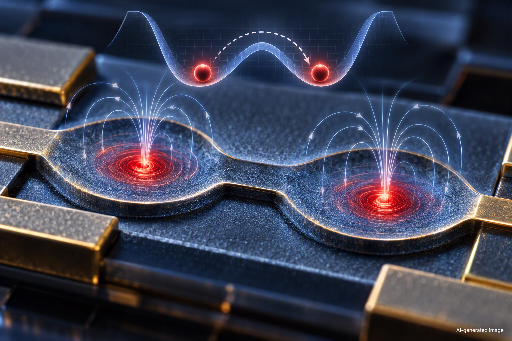

Ένα υπεραγώγιμο bit πλησιάζει το θεμελιώδες όριο κατανάλωσης ενέργειας
Ένας μικροσκοπικός μαγνητικός στρόβιλος μέσα σε έναν υπεραγωγό μπορεί να λειτουργήσει ως bit μνήμης με εξαιρετικά μικρή ενεργειακή κατανάλωση, πλησιάζοντας ένα από τα θεμελιώδη όρια της φυσικής της πληροφορίας.

Κάθε φορά που ένας υπολογιστής επεξεργάζεται πληροφορίες, ένα μέρος της ενέργειας που καταναλώνει τελικά μετατρέπεται σε θερμότητα. Υπάρχει όμως ένα θεμελιώδες ερώτημα: πόσο χαμηλά μπορεί να φτάσει αυτή η ενεργειακή δαπάνη; Η αρχή του Landauer συνδέει τη θερμοδυναμική με τη θεωρία της πληροφορίας και θέτει ένα ελάχιστο ενεργειακό κόστος για τη μη αντιστρεπτή διαγραφή ενός bit. Στα πραγματικά ηλεκτρονικά συστήματα η κατανάλωση βρίσκεται συνήθως αρκετά πάνω από αυτό το θεμελιώδες όριο. Μια ενδιαφέρουσα εναλλακτική προέρχεται από τους υπεραγωγούς, υλικά που κάτω από μια κρίσιμη θερμοκρασία μπορούν να μεταφέρουν ηλεκτρικό ρεύμα χωρίς τη συνηθισμένη ηλεκτρική αντίσταση. Σε ορισμένους υπεραγωγούς το μαγνητικό πεδίο μπορεί να εισχωρήσει με τη μορφή κβαντισμένων στροβίλων μαγνητικής ροής. Η θέση ενός τέτοιου στροβίλου μπορεί να αντιπροσωπεύει πληροφορία: δύο σταθερές θέσεις μπορούν, για παράδειγμα, να αντιστοιχούν στις καταστάσεις 0 και 1 ενός bit. Το κρίσιμο ερώτημα είναι αν αυτή η πληροφορία μπορεί να μεταβάλλεται αξιόπιστα με εξαιρετικά μικρό ενεργειακό κόστος.
Σε εργασία που δημοσιεύθηκε στις 24 Σεπτεμβρίου 2026 στο Nature Communications, οι Nofar Fridman και συνεργάτες μελέτησαν ακριβώς αυτή την ιδέα, εξετάζοντας την ενέργεια που απαιτείται για τον χειρισμό ενός bit το οποίο κωδικοποιείται στη θέση ενός μεμονωμένου υπεραγώγιμου στροβίλου. Ο στρόβιλος βρίσκεται σε ένα νανοκλίμακας δυναμικό διπλού πηγαδιού: ουσιαστικά, ένα ενεργειακό τοπίο με δύο προτιμώμενες θέσεις, οι οποίες μπορούν να χρησιμοποιηθούν ως οι δύο λογικές καταστάσεις της μνήμης. Οι ερευνητές ανέλυσαν πώς ο στρόβιλος μπορεί να μετακινηθεί ελεγχόμενα από τη μία κατάσταση στην άλλη και πόσο έργο απαιτεί αυτή η διαδικασία. Η αριθμητική ανάλυση της ομάδας δείχνει ότι το απαιτούμενο έργο για τον χειρισμό του bit μπορεί να φτάσει εντός μίας τάξης μεγέθους από το όριο Landauer, δηλαδή σε μια περιοχή όπου το ενεργειακό κόστος δεν απέχει πλέον πολλές τάξεις μεγέθους από ένα θεμελιώδες θερμοδυναμικό όριο. Πρόκειται επομένως όχι απλώς για έναν διαφορετικό τρόπο αποθήκευσης πληροφορίας, αλλά για ένα σύστημα στο οποίο μπορεί να εξεταστεί πειραματικά η σύνδεση πληροφορίας, θερμικών διακυμάνσεων και ενέργειας. Δείτε την πρωτότυπη επιστημονική δημοσίευση.
Η σημασία αυτής της προσέγγισης βρίσκεται τόσο στη φυσική όσο και στη μακροπρόθεσμη αναζήτηση υπολογιστικών τεχνολογιών εξαιρετικά χαμηλής κατανάλωσης. Ένας υπεραγώγιμος στρόβιλος είναι ένα καλά καθορισμένο φυσικό αντικείμενο σε νανοκλίμακα, ενώ η δυνατότητα ελέγχου της θέσης του προσφέρει έναν τρόπο να μελετηθεί πώς ένα πραγματικό bit προσεγγίζει τα θερμοδυναμικά όρια της επεξεργασίας πληροφορίας. Αυτό δεν σημαίνει ότι η συγκεκριμένη διάταξη αποτελεί ήδη μια πρακτική αντικατάσταση της συμβατικής μνήμης ούτε ότι ένας πλήρης υπολογιστής μπορεί να λειτουργήσει κοντά στο όριο Landauer: πρέπει να συνυπολογίζονται ο έλεγχος, η ανάγνωση και η λειτουργία ολόκληρου του συστήματος, ενώ η υπεραγωγιμότητα απαιτεί χαμηλές θερμοκρασίες. Η εργασία δείχνει κάτι πιο θεμελιώδες: ότι η δυναμική ενός μεμονωμένου κβαντισμένου μαγνητικού στροβίλου μπορεί να χρησιμοποιηθεί για να φέρει ένα φυσικό bit πολύ κοντά στην περιοχή όπου τα όρια της υπολογιστικής τεχνολογίας συναντούν άμεσα τους νόμους της θερμοδυναμικής. Αυτό καθιστά τους υπεραγώγιμους στροβίλους ενδιαφέρουσα πλατφόρμα τόσο για τη βασική έρευνα όσο και για μελλοντικές αρχιτεκτονικές ενεργειακά αποδοτικής πληροφορικής.